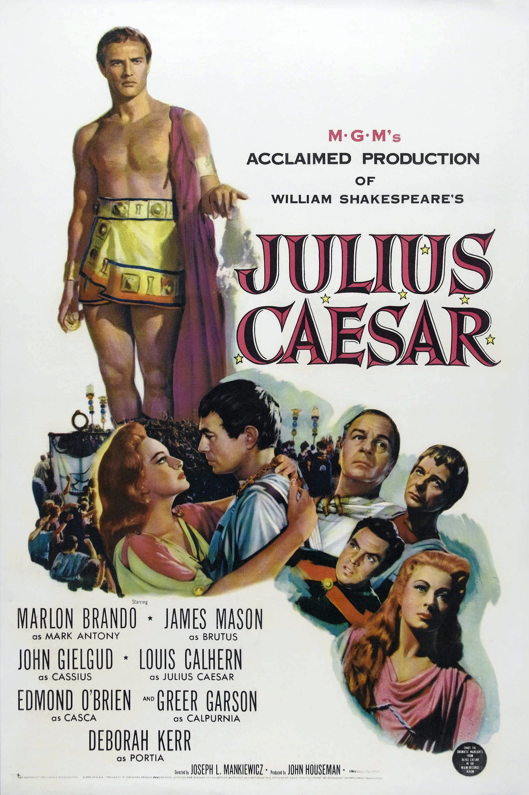

Julius Caesar
26th Academy Awards
(Oscars 1954)
5 Nominations, 1 Award
| Nominations | ||
|---|---|---|
| Category | Nominees | Result |
| Best Motion Picture | John Houseman | Nominated |
| Actor | Marlon Brando | Nominated |
| Cinematography (Black-and-White) | Joseph Ruttenberg | Nominated |
| Art Direction (Black-and-White) | Cedric Gibbons, Edward Carfagno, Edwin B. Willis, and Hugh Hunt | Won |
| Music (Music Score of a Dramatic or Comedy Picture) | Miklos Rozsa | Nominated |